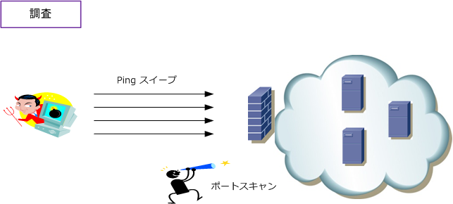
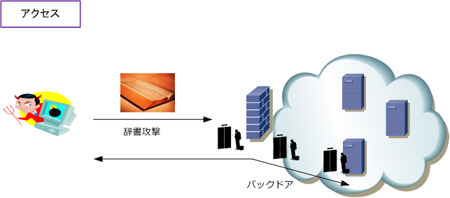
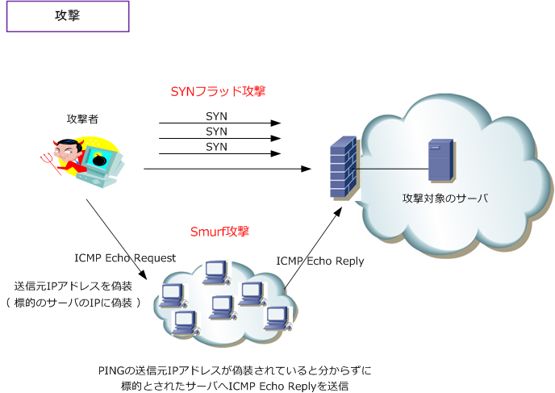

Hacker / Cracker
ネットワークセキュリティ - 攻撃者
ネットワークシステムにおける攻撃者は、一般的にハッカーと呼ばれていますが正確には「クラッカー」と 言います。以下に用語を整理します。クラッカーは、機密情報の収集、データの破壊、情報サービスの妨害 などの目的でクラッキングを行います。これらの行為に対してネットワークシステムとしてはFirewall、IDS IPSのネットワーク製品により防衛を行い、各コンピュータはウィルス対策ソフトウェア等で防衛を行います。
| セキュリティ用語 | 説明 |
|---|---|
| ハッキング | コンピュータや通信システムの動作の解析、プログラムの改良をしたりすること。 コンピュータシステムを熟知した技術者のエンジニアリングを広く意味する言葉。 |
| ハッカー | ハッキングを行う技術者のこと。 |
| クラッキング | 他人のコンピュータのデータやプログラムの盗み見、改ざん、破壊などを行うこと。 |
| クラッカー | クラッキングを行う技術者のこと。 |
| Firewall | ファイアーウォール。インターネットなどの外部ネットワークから、企業内LANの内部 ネットワーク上のコンピュータに対して不正なアクセスを防止するシステムのこと。 |
| IDS | 侵入検知システム。不正なアクセスや悪意のあるトラフィックを検知して通知するシステム。 |
| IPS | 侵入防止システム。不正なアクセスや悪意のあるトラフィックを検知、通知、防御するシステム。 |
| WAF | WAFは、Webアプリケーションの脆弱性を悪用した攻撃から保護するシステム。 |
ネットワークセキュリティ - 攻撃手法
攻撃は次の3つのステップを踏みます。Step 1：調査 ⇒ Step 2：アクセス ⇒ Step 3：攻撃の3段階。 アクセスはアクセス攻撃、攻撃はサービス不能攻撃ともいわれます。調査も一種の攻撃です。それではその 内容を見ていきましょう。以下で紹介する汎用的な3つのステップを知ることで、ネットワーク管理者として どのようにネットワークセキュリティを実装（ セキュリティ製品を実装 ）すべきなのか、よく分かります。
調査
攻撃者は、標的のネットワークにおいてどのIPアドレスが有効なのかを、pingスイープします。基本中の 基本ですがここから始まります。pingスイープとはIPアドレスを自動的に増加させるpingツールのことです。
次に、pingスイープによって判明したIPアドレスのホストへ、ポートスキャンを行うことで現在有効である サービスポートを特定します。これにより標的のサーバで稼働しているOSのバージョン、アプリケーション の種別、アプリケーションのバージョンが分かります。これらの情報により脆弱性が存在しているかどうか 不正利用可能かどうかを決定します。その他の高度な調査方法もありますが、上記の2点が基本的な手法です。
※ 攻撃者が調査をできないように、サーバ本体のIPを隠したり、サーバ上で不要なサービスポートを全て無効にする対策が必要。

※ この「調査」も違法行為であることから行ってはいけません。攻撃行為と判断されると法的措置を取られる可能性があります。
アクセス
攻撃者は、調査が完了すると次に「アクセス」へ移行します。アクセスとは、権限のない侵入者がIDと パスワードを不正に取得して、サーバへのアクセス権を獲得する能力のことです。また、不正アクセスを するための悪用ツールの実行もアクセスを指します。アクセスを実現するための、一般的な手法としては 辞書攻撃や総当たり攻撃を行います。辞書攻撃とは、辞書にある単語をパスワードとして延々と入力して 解読する手法（ツールの実行）です。したがって、パスワードは意味のない文字列の設定が推奨なのです。
総当たり攻撃とは、考えられる可能な組み合わせ(値)をパスワードとして試していく手法です。非効率な 手法ですがこれもツールを使用して実行されます。ゆえに、一般的にパスワードは入力制限を設けます。 ※ パスワードは平文パスワードは使用しない、定期的にパスワードを変更するなどの措置も取りましょう。

これらの手法でIDとパスワード情報が得られたら、 サーバに不正アクセスし、サーバに目立たないよう バックドアを設けます。バックドアは一度侵入した システムに次回も容易にアクセスできるようにする ための侵入経路のこと。このバックドアの生成能力 とログ消去の能力でクラッカーのレベルを判断可能。
ここで紹介したアクセスの手法以外にも、たとえば IPスプーフィングやセッションリプレイなど色々な アクセスが存在します。相手の手法を知ることで どのようにセキュリティ実装すべきか考えましょう。
攻撃
攻撃とは、サービス不能攻撃のことです。サービス不能とは、具体的にはサーバ上のディスクスペース、帯域、 バッファ、CPU、メモリへ高い負荷をかけて、リソースを使い果して正規ユーザに対するサービスを妨害する 行為のことです。このサービス不能攻撃にはDoS攻撃、DDoS攻撃があります。これらはサーバ側に行われる 攻撃ですが、サーバだけでなくクライアントに対しても行われる攻撃にはウィルス、トロイの木馬があります。 これらの攻撃を防ぐためには Firewall、IDS / IPS、WAF、ウィルス対策ソフト等を導入する必要があります。

| サービス不能攻撃 | 説明 |
|---|---|
| DoS攻撃 | ネットワーク機器、サーバへのシステム攻撃を行い、正規ユーザへのサービス提供を不能 にすること。具体的には「SYNフラッド攻撃、ICMPフラッド攻撃、smurf攻撃」などがある。 |
| DDoS攻撃 | DDoSは、通常のDoS攻撃と似た攻撃手法を利用するが、より大規模で実行される攻撃。 複数のネットワークに分散する大量のコンピュータから一斉に攻撃をしかける攻撃手法。 DDoS攻撃の一種にDRDoS攻撃があり、攻撃者は多数のコンピュータに対しパケットを 送信し、そのコンピュータによる反射を利用して、標的となるサーバなどを攻撃する手法。 |
| ウィルス | 他人のコンピュータに不正侵入してして障害を引き起こす不正プログラムのこと。インターネット 上でダウンロードした不正なファイルに添付されていることが多い。自身で複製していくタイプの ウィルスはワームとも呼ばれる。メールに添付されているファイルなどで複製していくウィルスとは 異なりセキュリティホールを抱えたコンピュータを外部ネットワークに接続しただけで感染していく。 |
| トロイの木馬 | ギリシア神話による登場する装置。正体を偽りコンピュータへ不正侵入してそのコンピュータ自身 のデータ破壊や、他のコンピュータなどの破壊活動を行う不正なプログラム。このトロイの木馬は 一見普通の実行形式（ .exe ）のプログラムのように見せているので、プログラムがトロイの木馬か どうか分からない。例えばインターネット上である機能を持ったプログラムがあったとして、それを ユーザがダウンロードして、そのファイル(.exe)ファイルを実行することで悪意ある動作を開始する。 |